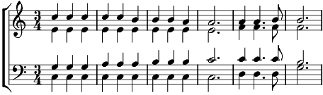

1. Quand le cafard tourne en rond dans ta tête
Viens dans ma ville, viens dans ma rue
Quand les amis, les amours font la tête
Viens dans ma ville, viens dans ma rue
Y'a du ciel bleu qui t'attend dans ma rue
Un bouquet de soleil par-dessus
Et, ça donne un air de fête
Tous les jours à ma rue
Quand ça va mal quand ton cœur fait naufrage
Viens dans ma ville, viens dans ma rue
Qui sait peut-être un jour tu trouveras
Dans ma rue, un amour fait pour toi
2. Y'a des chansons et du linge aux fenêtres
Viens dans ma ville, viens dans ma rue
Ça claque au vent comme pour un jour de fête
Viens dans ma ville, viens dans ma rue
Y'a des enfants qui attrapent dans ma rue
Le soleil pour t'en mettre plein la vue
Et, font des sons et lumières
Mais ils vont les pieds nus
Ils seront fiers de te faire un cortège
Viens dans ma ville, viens dans ma rue
Peut-être un jour avec eux tu verras
Dans ma rue, celle qui t'attend déjà
3. Ça fait longtemps qu'elle attend que tu viennes
Viens dans ma ville, viens dans ma rue
Ça fait des jours longs comme des semaines
Viens dans ma ville, viens dans ma rue
Et cette fille comme une enfant perdue
Elle t'aime chaque jour un peu plus
Mais, elle pleure à sa fenêtre
Quand on danse dans la rue
Danse avec elle comme tous les gens qui s'aiment
Viens dans ma ville, viens dans ma rue
Alors peut-être en dansant tu verras
Que cette fille qui t'aimait, c'était moi
4. Danse avec moi puisque c'est toi que j'aime
Viens dans ma ville, viens dans ma rue
Et je suis sûre qu'en dansant tu verras
Que cette fille qui t'aime, c'est bien moi
C'est bien moi, c'est bien moi